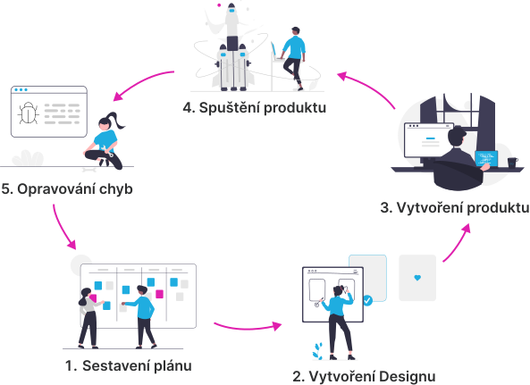

Vývoj produktu
Tato část je zaměřena na popis postupu při vývoji produktu, a prvků, které k tomu patří. Dozvíte se tu v jakých fázích vývoje pracuje designer a jaké jsou klíčové prvky pro návrh produktu.
Fáze vývoje produktu
Vývoj produktu se dělí na různé fáze, které mají na starosti různí lidé. Designer se například stará o grafický návrh produktu a programátor podle tohoto návrhu vytváří funkční produkt. Na začátku vývoje se plánuje jak by měl produkt vypadat, co by měl dělat, a tak dále. Poté se vytvoří grafický návrh a podle něj vývojář vytváří funkčí produkt. Až je produkt hotový, tak se může spustit a sleduje se jestli se v něm náhodou neobjevují chyby. Pokud se na nějaké chyby přijde, tak se opravují. Nemusí to být chyby jen ve funkčnosti, ale můžou se třeba objevit i nějaké nedostatky v designu. Možná zjistíme že náš design není pro uživatele dost intuitivní, že bychom měli pozměnit barvy, a tak dále. Tvoří se nám tím tedy takový cyklus, který znázorňuje následující obrázek. Designer pracuje hlavně v prvních dvou fázích vývoje a pokud je potřeba něco upravit, tak i v poslední.
1. Sestavení plánu
První fází vývoje produktu je plánování. Plánujeme jak by měl produkt vypadat, jakým dojmem by měl na uživatele působit a co by měl dělat. V této fázi většinou komunikujeme s klientem (pokud děláme produkt pro něj) a zjišťujeme jaké jsou jeho cíle a jaké jsou potřeby jeho budoucích uživatelů produktu. Sestavujeme si plán, abychom měli při vývoji produktu jasně definované cíle.
2. Vytvoření designu
Jako druhou fázi vývoje produktu představuje vytvoření designu. Používáme veškeré informace získané v plánovací fázi a děláme podle nich grafický návrh produktu. Určujeme jak by měla vypadat struktura webu, kde by se měla nacházet navigace, a tak dále. Po skončení této fáze máme vizuální reprezentaci toho, jak by měl produkt který vytváříme vypadat.
3. Vytvoření produktu
Po vytvoření grafického návrhu se můžeme pustit do samotného vytvoření produktu. Vezmeme náš grafický návrh a pomocí jazyků HTML, CSS a JavaScript podle něj vytváříme webové stránky nebo aplikaci.
4. Spuštění produktu
Poté co náš produkt vytvoříme, tak jej můžeme spustit. Nahrajeme naše webové stránky nebo aplikaci na server, aby k nim mohli mít uživatelé přístup. Před tímto krokem ale můžeme chtít ještě třeba provést nějaké testování a popřípadě náš produkt ještě mírně upravit.
5. Opravování chyb
Spuštěním produktu naše práce ještě nekončí. Jak budou uživatelé náš produkt používat, tak můžeme narazit na nějaké chyby, které budeme muset opravit. Nemusí se jednat jen o chyby ve funkčnosti, ale může se také například stát, že náš produkt není pro uživatele dostatečně intuitivní a má problém s jeho používáním. V takovém případě můžeme třeba pozměnit strukturu webových stránek, umístit navigaci mezi stránkami někam jinam, a tak dále. Učíme se z předchozích chyb a postupně náš produkt zlepšujeme. Tvoří se tím tedy takový cyklus, který se několikrát nebo stále opakuje.
Klíčové prvky pro návrh produktu
Když se řekne design, většina lidí nebere v úvahu všechny věci, které jsou pro návrh produktu důležité. Pro návrh produktu existují čtyři klíčové prvky, které platí hlavně pro návrh webových stránek a aplikací: grafický design, user experience (UX), cílová konverze a vývoj pro platformu.
Grafický Design
Neodmyslitelným návrhem produktu je grafický design. K vytvoření pěkného návrhu musíme umět pracovat s barvami, typografií, layouty (rozmístěním prvků na stránce), obrázky, ikonami, a tak dále. Snažíme se v uživatelích designem probudit určité pocity a zaměřujeme se na specifickou cílovou skupinu našich budoucích uživatelů.
User Experience
Při vývoji produktu nestačí znát jen samotný grafický design. Musíme být pro uživatele schopni vytvořit produkt, který pro něj bude snadno použitelný. Naše webové stránky nebo aplikace mohou vypadat hezky, ale pokud se v nich uživatel ztrácí a špatně se mu používají, tak je to špatně. User Experience (UX) je o tom, že se snažíme aby bylo pro uživatele používání našeho produktu co nejpříjemnější.
Cílová konverze
Pokud vyvíjíme nějaký produkt pro klienta, tak musíme do jeho návrhu zahrnout cíle, které od produktu klient očekává. Pokud například vyvíjíme e-shop, tak náš klient očekává, že v něm budou jeho zákazníci nakupovat. Musíme tedy umět uživatele k této akci nějakým způsobem motivovat.
Vývoj pro platformu
Posledním klíčovým prvkem pro návrh produktu, který tu zmíním, je vývoj pro platformu. Pokud jako designéři máme alespoň základní znalost o tom, jak se pro platformu pro kterou produkt navrhujeme vyvíjí, tak máme výhodu že při navrhování víme co funguje a co ne.